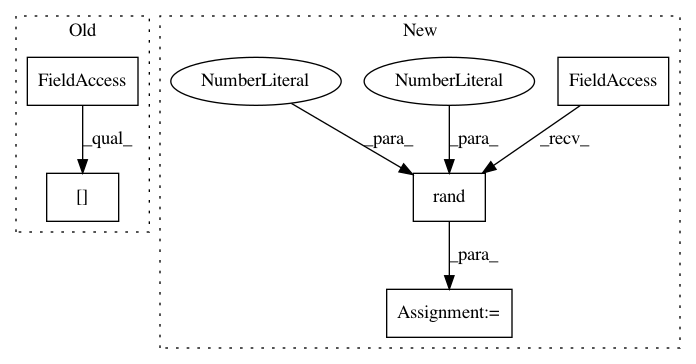

c95d470a391216cfe96e717840b2cef8d053f7b1,art/defences/variance_minimization_unittest.py,TestTotalVarMin,test_three_channels,#TestTotalVarMin#,31
Before Change
def test_three_channels(self):
(train_features, _), (_, _) = cifar10.load_data()
x = train_features[:2] / 255.0
preprocess = TotalVarMin()
preprocessed_x = preprocess(x)
self.assertTrue((preprocessed_x.shape == x.shape))
After Change
self.assertFalse((preprocessed_x == x).all())
def test_three_channels(self):
x = np.random.rand(2, 32, 32, 3)
preprocess = TotalVarMin()
preprocessed_x = preprocess(x)
self.assertTrue((preprocessed_x.shape == x.shape))
self.assertTrue((preprocessed_x <= 1.0).all())
In pattern: SUPERPATTERN
Frequency: 3
Non-data size: 5
Instances
Project Name: IBM/adversarial-robustness-toolbox
Commit Name: c95d470a391216cfe96e717840b2cef8d053f7b1
Time: 2019-01-10
Author: Maria-Irina.Nicolae@ibm.com
File Name: art/defences/variance_minimization_unittest.py
Class Name: TestTotalVarMin
Method Name: test_three_channels
Project Name: IBM/adversarial-robustness-toolbox
Commit Name: c95d470a391216cfe96e717840b2cef8d053f7b1
Time: 2019-01-10
Author: Maria-Irina.Nicolae@ibm.com
File Name: art/defences/variance_minimization_unittest.py
Class Name: TestTotalVarMin
Method Name: test_one_channel
Project Name: markovmodel/PyEMMA
Commit Name: 154f3ab678432940308cf390216571318df59202
Time: 2018-02-28
Author: florianlitzinger@users.noreply.github.com
File Name: pyemma/coordinates/tests/test_nystroem_tica.py
Class Name: TestNystroemTICA_Simple
Method Name: setUpClass